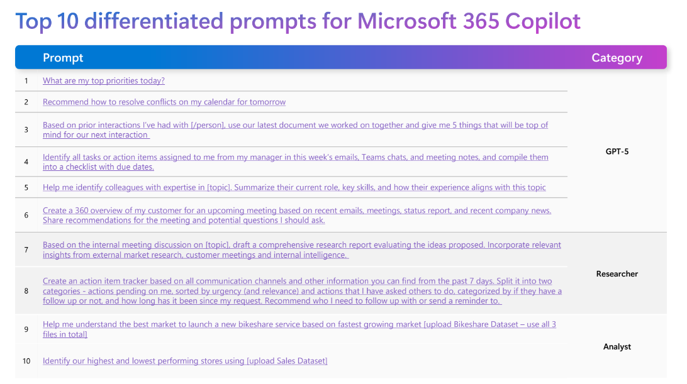
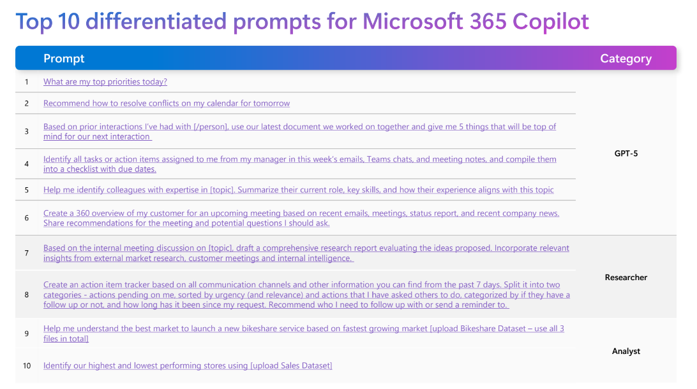
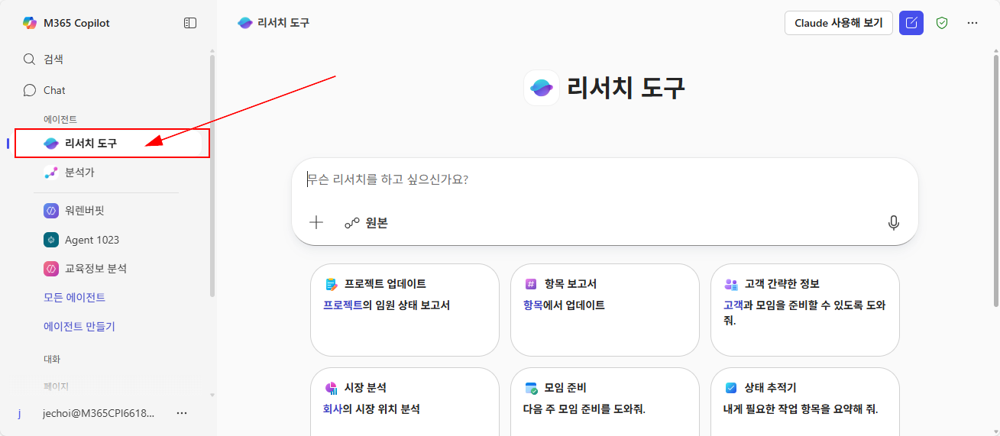

이번 단계에서는 리서치 도구 에이전트를 체험해 보겠습니다.
Tip ▶ 아시나요? 본사에서 공지했던 추천 프롬프트가 있었다는 것을...


1️⃣ 첫번째 단계, 리서치 도구 에이전트 사용해보기
- 코파일럿의 Work Chat에 접속합니다. https://m365.cloud.microsoft/chat/
-
좌측의 에이전트 목록에서 리서치 도구 에이전트를 선택합니다.
 - 아래 예시 질문을 복사하여 리서치 도구 에이전트에 입력해 봅니다.
🚩 ① 연구 보고서 작성 프롬프트
내부 회의에서 논의된 [주제]를 기반으로, 제안된 아이디어를 심층 분석하고 평가하는 종합 연구 보고서를 작성해 주세요.
보고서에는 다음을 포함해 주세요:
- 각 아이디어의 강점과 약점
- 실행 가능성 및 예상 영향
- 외부 시장 조사, 고객 미팅, 내부 데이터에서 얻은 최신 인사이트
- 전략적 권장 사항과 향후 단계
보고서는 명확한 구조(요약, 분석, 권장 사항)로 작성해 주세요.
보고서에는 다음을 포함해 주세요:
- 각 아이디어의 강점과 약점
- 실행 가능성 및 예상 영향
- 외부 시장 조사, 고객 미팅, 내부 데이터에서 얻은 최신 인사이트
- 전략적 권장 사항과 향후 단계
보고서는 명확한 구조(요약, 분석, 권장 사항)로 작성해 주세요.
🚩 ② 액션 아이템 추적기 프롬프트
지난 7일간의 이메일, Teams 채팅, 회의록 등 모든 커뮤니케이션을 기반으로 액션 아이템 추적기를 작성해 주세요.
다음 기준으로 정리해 주세요:
1) 내가 처리해야 하는 작업: 긴급도와 중요도 순으로 정렬, 마감일 포함
2) 내가 다른 사람에게 요청한 작업: 후속 조치 여부, 요청 후 경과 시간, 상태(진행 중/대기 중)
마지막으로, 후속 연락이 필요한 사람과 리마인더를 보내야 할 우선순위 목록을 추천해 주세요.
다음 기준으로 정리해 주세요:
1) 내가 처리해야 하는 작업: 긴급도와 중요도 순으로 정렬, 마감일 포함
2) 내가 다른 사람에게 요청한 작업: 후속 조치 여부, 요청 후 경과 시간, 상태(진행 중/대기 중)
마지막으로, 후속 연락이 필요한 사람과 리마인더를 보내야 할 우선순위 목록을 추천해 주세요.
2️⃣ 두번째 단계, 리서치 도구 에이전트에서 나만의 프롬프트 사용해보기
리서치 도구 에이전트에서 나의 업무와 관련한 질문을 자유롭게 던져 보세요.
🚩 예시 프롬프트
내 고객사는 Microsoft 365 라이선스를 보유하고 있지만, 실제로는 이를 활용하지 않고 있습니다. 고객사가 M365를 효과적으로 활용할 수 있도록, 도입 후 기대할 수 있는 주요 이점과 성공 사례를 중심으로 제안서의 초안을 작성해 주세요.
최근의 생성형 AI 기술 발전이 금융 서비스 산업에 미치는 영향을 분석하는 보고서를 작성해 주세요. 특히, 리스크 관리, 고객 경험 개선, 운영 효율성 향상 측면에서의 활용 사례를 중심으로 다뤄 주세요.
한국의 중소기업(SMB) 시장에서 Microsoft Azure의 성장 기회를 평가하는 보고서를 작성해 주세요. 경쟁사 분석, 시장 동향, 고객 요구 사항을 포함하여, Azure가 SMB 시장에서 차별화될 수 있는 전략적 접근 방안을 제안해 주세요.
한국 고객에게 효과적인 마케팅 켐페인을 기획하기 위해, 국내외의 성공적인 디지털 마케팅 사례를 조사하고, 이를 바탕으로 우리 회사의 제품과 서비스에 적용할 수 있는 전략을 제안해 주세요.
3️⃣ 세번째 단계, 나의 리서치 도구 프롬프트 공유하기
오늘 이 시간 리서치 도구에서 실제로 사용해 보았던 프롬프트를 공유해 주세요.